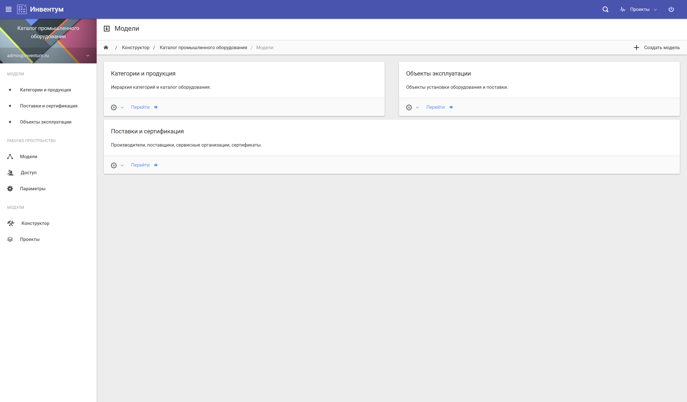
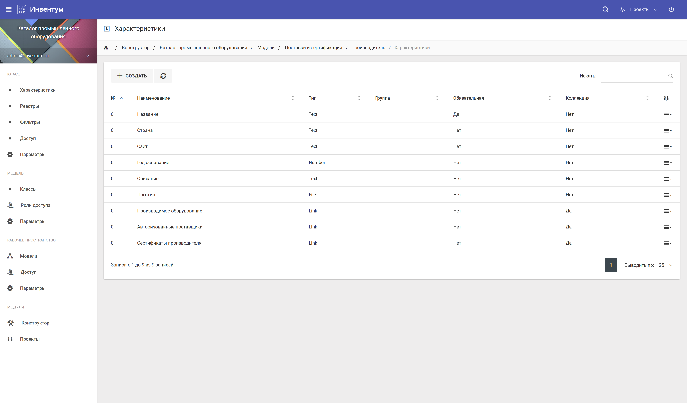
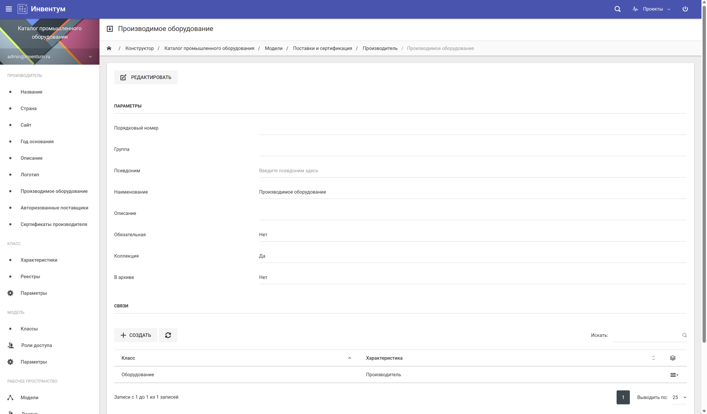
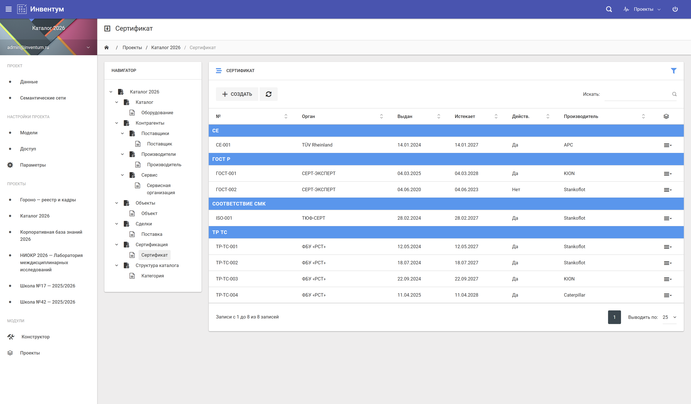
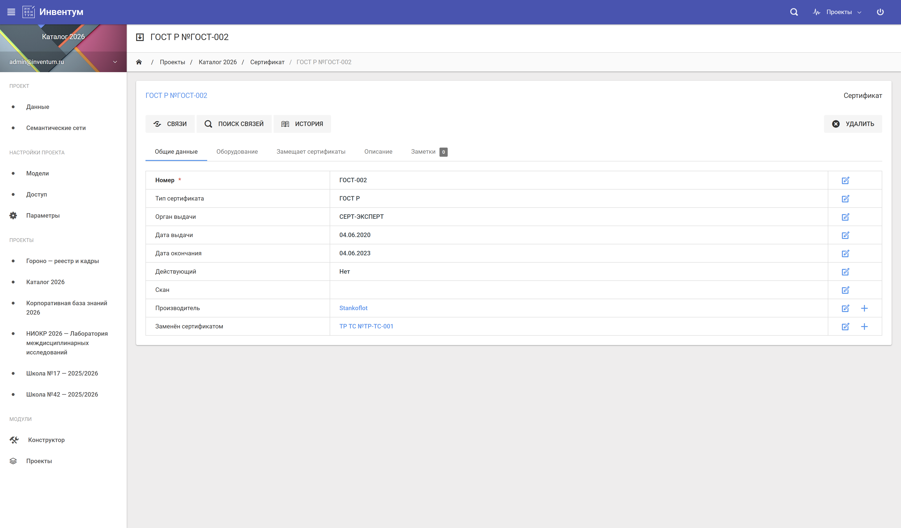
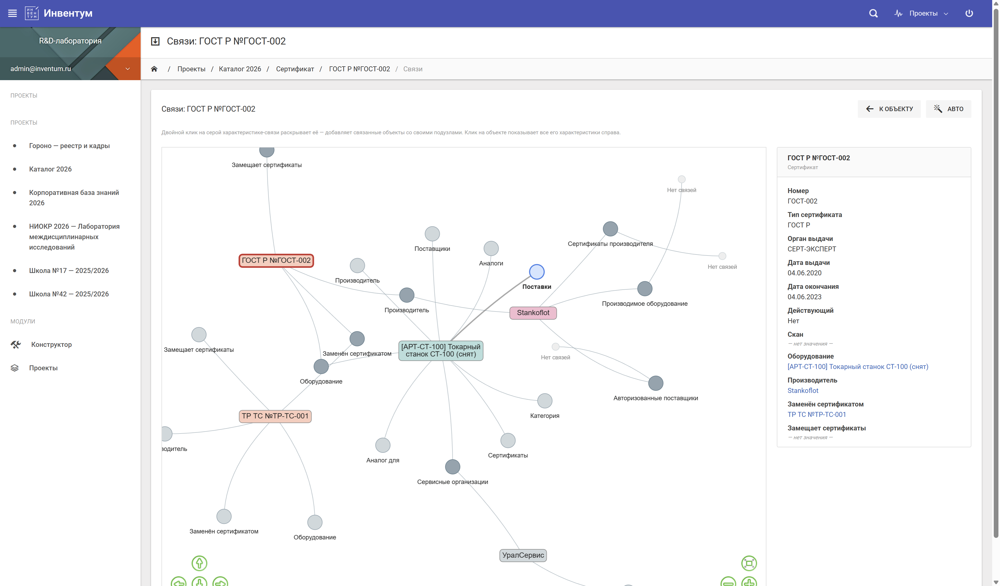
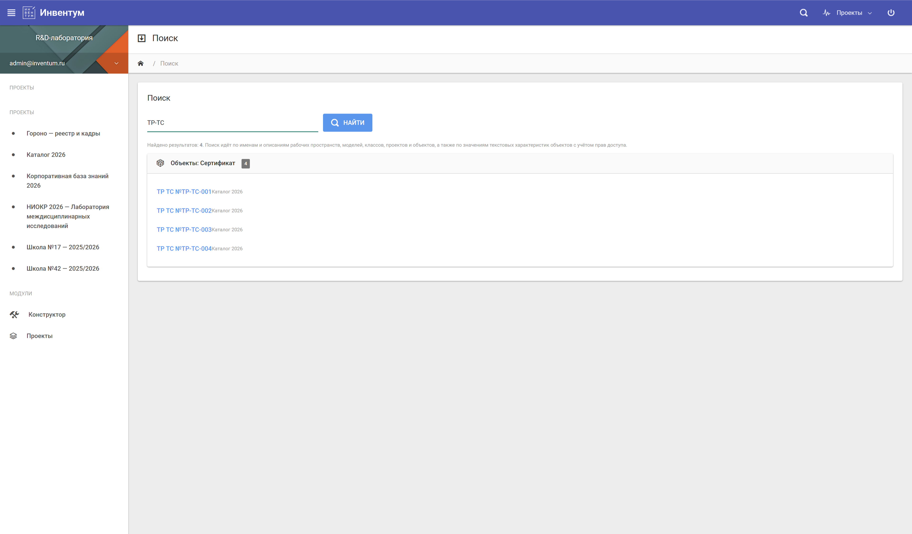
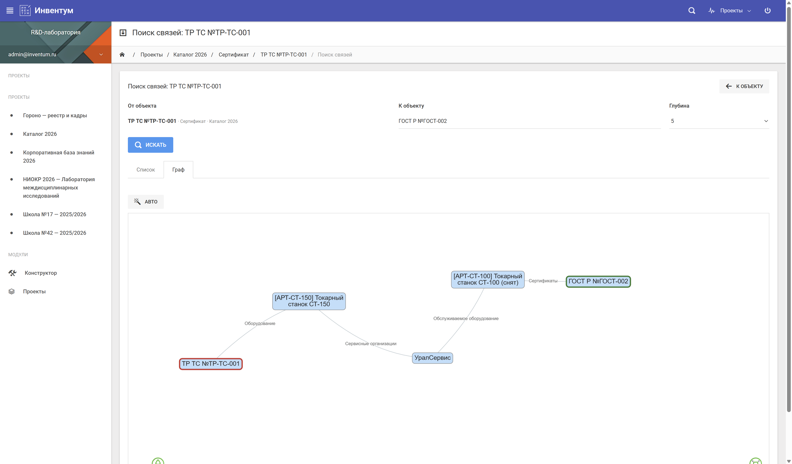
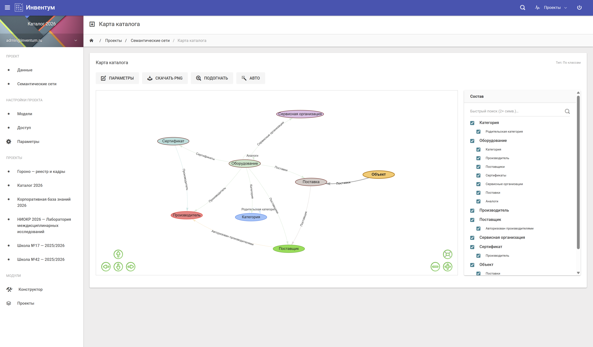

Прототип в задаче отраслевого каталога — для производственной компании, отраслевой ассоциации, промышленного интегратора. Каталог оборудования с поставщиками, сертификатами, ценами и объектами установки. Богатые связи и фасетный поиск, который не делается обычной CMS.
Отраслевые каталоги — оборудования, объектов, специалистов, лицензий — обычно ведутся либо в Excel, либо на самописных порталах с самодельной CMS. Excel разваливается при росте, а CMS обычно ориентированы на статьи и баннеры, а не на типизированные объекты с десятками характеристик и связями. В итоге компания либо тратит ресурсы на собственную разработку, либо теряет в качестве данных.
ИНВЕНТУМ закрывает именно этот зазор: типизированные классы, гибкая модель характеристик, явные связи, мощный поиск. Каталог получает фасетные фильтры, сравнение объектов по характеристикам, навигацию от поставщика к его продукции, от продукции к объектам установки. Это не CMS и не самописное решение — это структурированная предметная база с готовым UI.
Метамодель отражает структуру каталога. Пример приведён для каталога промышленного оборудования — но та же логика работает для любого отраслевого каталога: недвижимости, специалистов, услуг, нормативно-технической документации.
Ключевые связи: Оборудование относится к категории и производится производителем. Поставляется поставщиками и сервисируется сервисными организациями. Имеет сертификаты соответствия. Установлено на объектах через договоры поставки. Каждая связь — двунаправленная: от любого производителя видим, какое его оборудование где установлено, кем поставлено и какие у него сертификаты.
Девять ключевых экранов прототипа на этой модели данных — от конструктора метамодели до семантической сети. Кликните по скриншоту, чтобы рассмотреть его подробнее.









Расскажем подробнее, покажем демо на реальной модели, обсудим возможности пилотного проекта.
Связаться